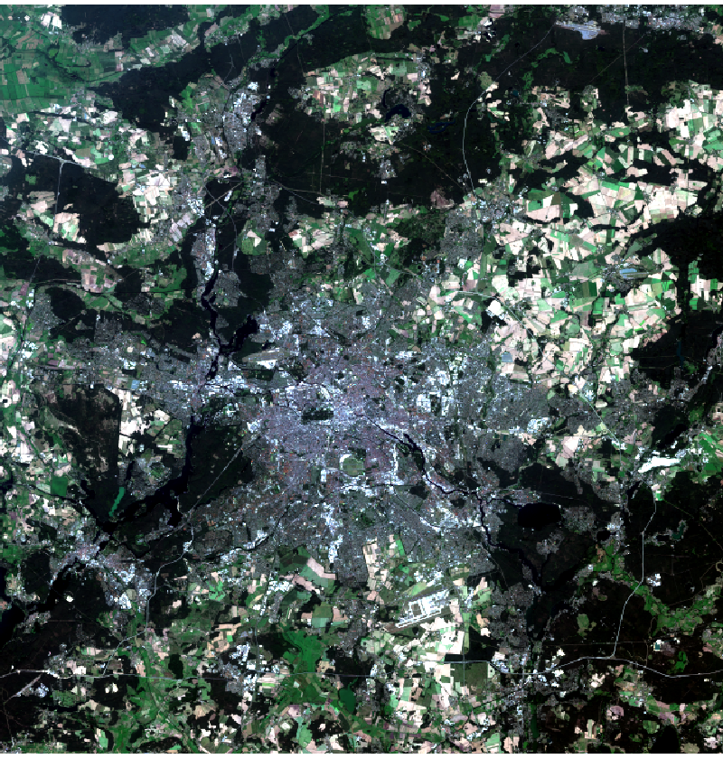
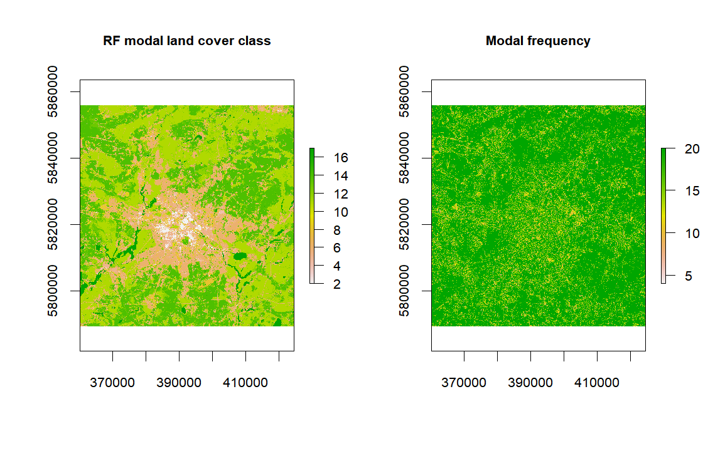

P8 Advanced techniques with raster data (part-2) - Supervised Classification
João Gonçalves
28 de Novembro de 2017
## Create a folder named data-raw inside the working directory to place downloaded data
if(!dir.exists("./data-raw")) dir.create("./data-raw")
## If you run into download problems try changing: method = "wget"
download.file("https://raw.githubusercontent.com/joaofgoncalves/R_exercises_raster_tutorial/master/data/berlin.zip", "./data-raw/berlin.zip", method = "auto")
## Uncompress the zip file
unzip("./data-raw/berlin.zip", exdir = "./data-raw")library(raster)
library(randomForest)fl <- list.files("./data-raw/berlin/S2", pattern = ".tif$", full.names = TRUE)
rst <- stack(fl)
names(rst) <- c(paste("b",2:8,sep=""),"b8a","b11","b12")plotRGB(rst, r=3, g=2, b=1, scale=100000, stretch="lin", main="RGB composite (b8,b3,b2) of Sentinel-2")

rstTrain <- raster("./data-raw/berlin/train/berlin_lcz_GT.tif")
rstTrain[rstTrain==0] <- NA
rstTrain <- ratify(rstTrain)
names(rstTrain) <- "trainClass"
rstDF <- na.omit(values(stack(rstTrain, rst)))
rstDF[,"trainClass"] <- as.factor(as.character(rstDF[,"trainClass"]))nEvalRounds <- 20
pTrain <- 0.5
n <- nrow(rstDF)
nClasses <- length(unique(rstDF[,"trainClass"]))# Initialize objects
confMats <- array(NA, dim = c(nClasses,nClasses,nEvalRounds))
evalMatrix<-matrix(NA, nrow=nEvalRounds, ncol=3,
dimnames=list(paste("R_",1:nEvalRounds,sep=""),
c("Accuracy","Kappa","PSS")))
pb <- txtProgressBar(1, nEvalRounds, style = 3)# Run the classifier
for(i in 1:nEvalRounds){
# Create the random index for row selection at each round
sampIdx <- sample(1:n, size = round(n*pTrain))
# Calibrate the RF classifier
rf <- randomForest(y = rstDF[sampIdx, "trainClass"],
x = rstDF[sampIdx, -1],
ntree = 200)
# Predict the class to the test set
testSetPred <- predict(rf, newdata = rstDF[-sampIdx,], type = "response")
# Get the observed class vector
testSetObs <- rstDF[-sampIdx,"trainClass"]
# Evaluate
evalData <- Evaluate(testSetObs, testSetPred)
evalMatrix[i,] <- c(evalData$Metrics["Accuracy",1],
evalData$Metrics["Kappa",1],
evalData$Metrics["PSS",1])
confMats[,,i] <- evalData$ConfusionMatrix
rstPredClassTMP <- predict(rst, model = rf,
factors = levels(rstDF[,"trainClass"]))
if(i==1){
# Initiate the predicted raster
rstPredClass <- rstPredClassTMP
# Get precision and recall for each class
Precision <- evalData$Metrics["Precision",,drop=FALSE]
Recall <- evalData$Metrics["Recall",,drop=FALSE]
}else{
# Stack the predicted rasters
rstPredClass <- stack(rstPredClass, rstPredClassTMP)
# Get precision and recall for each class
Precision <- rbind(Precision,evalData$Metrics["Precision",,drop=FALSE])
Recall <- rbind(Recall,evalData$Metrics["Recall",,drop=FALSE])
}
setTxtProgressBar(pb,i)
}
# save.image(file = "./data-raw/P8-session.RData")knitr::kable(evalMatrix, digits = 3)| Accuracy | Kappa | PSS | |
|---|---|---|---|
| R_1 | 0.788 | 0.755 | 0.749 |
| R_2 | 0.789 | 0.756 | 0.751 |
| R_3 | 0.782 | 0.748 | 0.741 |
| R_4 | 0.795 | 0.763 | 0.757 |
| R_5 | 0.789 | 0.755 | 0.749 |
| R_6 | 0.789 | 0.755 | 0.750 |
| R_7 | 0.784 | 0.751 | 0.744 |
| R_8 | 0.785 | 0.751 | 0.745 |
| R_9 | 0.785 | 0.751 | 0.745 |
| R_10 | 0.789 | 0.756 | 0.750 |
| R_11 | 0.785 | 0.752 | 0.746 |
| R_12 | 0.786 | 0.752 | 0.746 |
| R_13 | 0.786 | 0.753 | 0.747 |
| R_14 | 0.785 | 0.751 | 0.745 |
| R_15 | 0.794 | 0.762 | 0.756 |
| R_16 | 0.785 | 0.752 | 0.745 |
| R_17 | 0.791 | 0.759 | 0.753 |
| R_18 | 0.782 | 0.748 | 0.741 |
| R_19 | 0.781 | 0.746 | 0.739 |
| R_20 | 0.785 | 0.751 | 0.744 |
avgPrecision <- apply(Precision,2,mean)
print(avgPrecision)## 11 12 13 14 16 17 2
## 0.9632428 0.7048153 0.7171620 0.9061842 0.7886166 0.9975525 0.6570942
## 4 5 6 8 9
## 0.3449612 0.5090742 0.6979711 0.6639569 0.4841384avgRecall <- apply(Recall,2,mean)
print(avgRecall)## 11 12 13 14 16 17
## 0.97912625 0.68455067 0.64847883 0.95967573 0.43395144 0.99965788
## 2 4 5 6 8 9
## 0.61060359 0.09335469 0.48139447 0.86941382 0.64690571 0.26760869avgF1 <- (2 * avgPrecision * avgRecall) / (avgPrecision+avgRecall)
print(avgF1)## 11 12 13 14 16 17 2
## 0.9711196 0.6945352 0.6810933 0.9321632 0.5598401 0.9986041 0.6329964
## 4 5 6 8 9
## 0.1469431 0.4948476 0.7743162 0.6553204 0.3446894# Best round for Kappa
evalMatrix[which.max(evalMatrix[,"Kappa"]), , drop=FALSE]## Accuracy Kappa PSS
## R_4 0.7946858 0.7626567 0.7569426# Show confusion matrix for the best kappa
cm <- confMats[,,which.max(evalMatrix[,"Kappa"])]
colnames(cm) <- rownames(cm) <- paste("c",levels(rstDF[,"trainClass"]),sep="_")
knitr::kable(cm)| c_11 | c_12 | c_13 | c_14 | c_16 | c_17 | c_2 | c_4 | c_5 | c_6 | c_8 | c_9 | |
|---|---|---|---|---|---|---|---|---|---|---|---|---|
| c_11 | 2442 | 30 | 2 | 2 | 0 | 0 | 0 | 1 | 1 | 8 | 0 | 3 |
| c_12 | 48 | 330 | 57 | 23 | 0 | 0 | 0 | 1 | 5 | 24 | 1 | 7 |
| c_13 | 7 | 43 | 358 | 97 | 1 | 1 | 0 | 0 | 2 | 6 | 4 | 3 |
| c_14 | 0 | 20 | 48 | 2096 | 1 | 0 | 0 | 1 | 1 | 11 | 0 | 5 |
| c_16 | 0 | 3 | 4 | 29 | 80 | 0 | 0 | 0 | 4 | 4 | 51 | 5 |
| c_17 | 0 | 0 | 0 | 0 | 0 | 914 | 0 | 0 | 0 | 0 | 0 | 0 |
| c_2 | 0 | 0 | 0 | 4 | 1 | 0 | 507 | 6 | 199 | 23 | 73 | 1 |
| c_4 | 2 | 4 | 6 | 5 | 2 | 0 | 2 | 31 | 114 | 105 | 16 | 9 |
| c_5 | 5 | 3 | 3 | 10 | 1 | 0 | 171 | 29 | 619 | 262 | 87 | 14 |
| c_6 | 14 | 19 | 5 | 4 | 0 | 0 | 1 | 6 | 142 | 1753 | 13 | 38 |
| c_8 | 2 | 7 | 6 | 15 | 7 | 3 | 78 | 7 | 136 | 35 | 516 | 13 |
| c_9 | 3 | 9 | 10 | 17 | 1 | 0 | 0 | 2 | 10 | 190 | 5 | 104 |
rstModalClass <- modal(rstPredClass)
rstModalClassFreq <- modal(rstPredClass, freq=TRUE)
medFreq <- zonal(rstModalClassFreq, rstTrain, fun=median)medFreq[order(medFreq[,2],decreasing = TRUE),]## zone value
## [1,] 6 20
## [2,] 11 20
## [3,] 12 20
## [4,] 14 20
## [5,] 17 20
## [6,] 2 19
## [7,] 8 19
## [8,] 13 19
## [9,] 5 15
## [10,] 16 14
## [11,] 9 13
## [12,] 4 11par(mfrow=c(1,2), cex.main=0.8, cex.axis=0.8)
plot(rstModalClass, main = "RF modal land cover class")
plot(rstModalClassFreq, main = "Modal frequency")